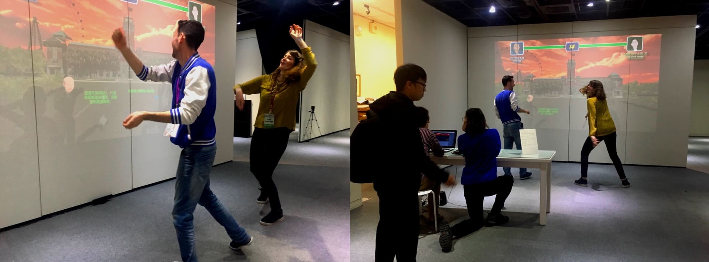
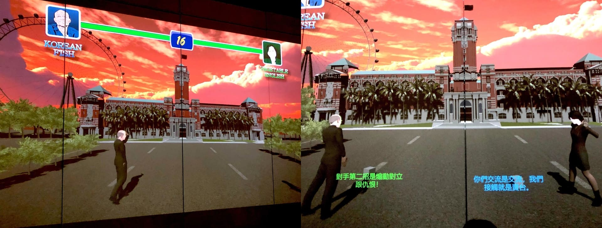
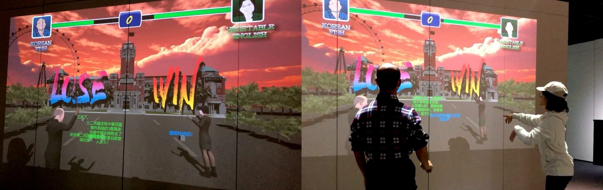

2020 Taiwan Election Fight
A Kinect-based political satire game mirroring Taiwan’s 2020 electoral tensions.
Unity
Kinect
Interactive Game
Web Crawler
Critical Design
TIME | 2020
AUTHORS | Po-Yao Wu, Tai-Chen Tsai, Hao-Ming Huang

MOTIVATION |
Created in response to the tense and polarized atmosphere of Taiwan’s 2020 presidential election, this project uses satire to reveal the combative nature of political discourse. By stylizing the election as a Street Fighter–inspired showdown between the two major candidates—Tsai Ing-wen and Han Kuo-yu—the work mirrors how supporters and media narratives often frame politics as a binary clash rather than a democratic exchange.
We wanted to cut through the spectacle of campaign rhetoric by transforming real political arguments into exaggerated interactive play, using humor and confrontation to highlight the emotional, adversarial, and performative dimensions of this historic election.
APPROACH |
The installation is built with Unity and Kinect, mapping players’ body movements onto full-scale avatars of the two candidates. By physically “pushing,” players trigger attacks that launch objects containing phrases scraped from online discourse—campaign slogans, criticisms, and policy-based attacks exchanged between both political camps.
Each hit visualizes a piece of internet rhetoric, turning digital noise into tangible projectiles within the game arena. The match concludes when one candidate’s argument-powered attacks overpower the other, framing public opinion and online narratives as weapons in a symbolic political battleground. The result is both playful and critical, exposing how digital culture amplifies conflict in modern elections.
 